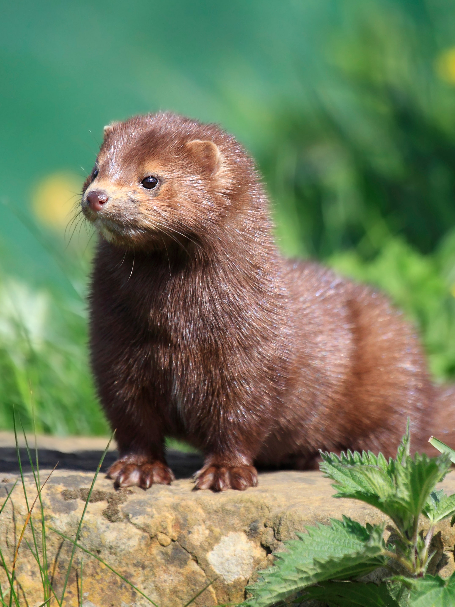
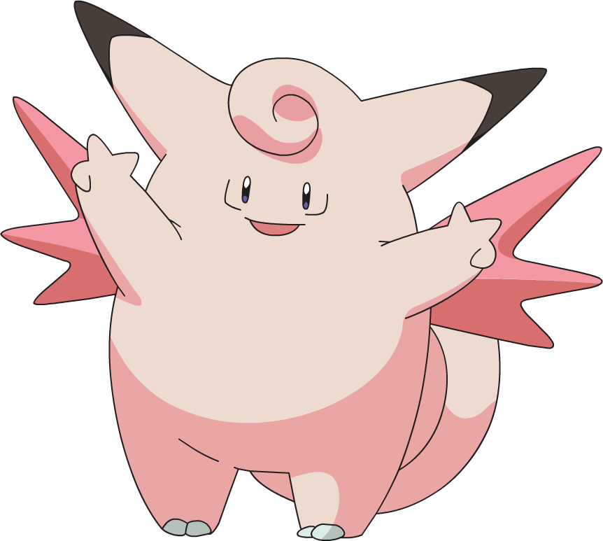
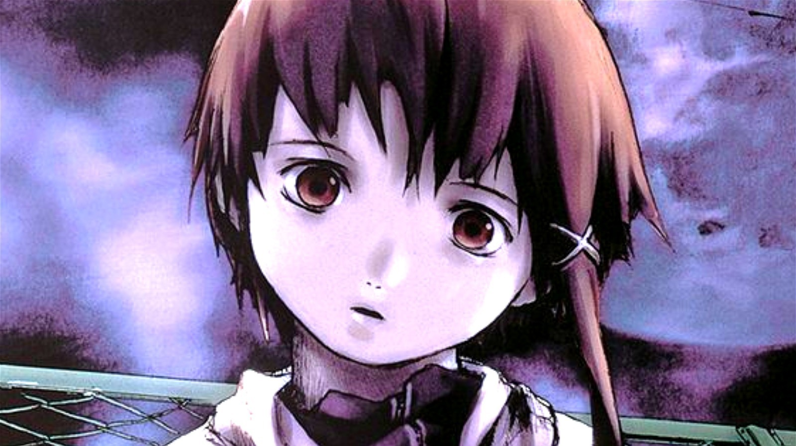
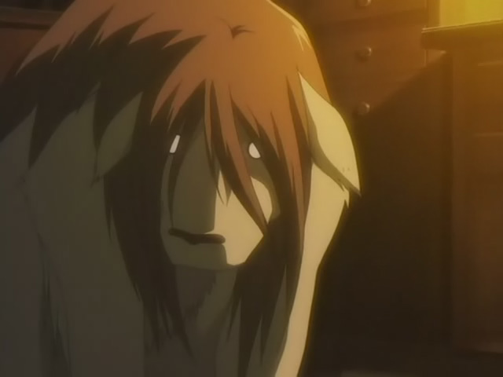
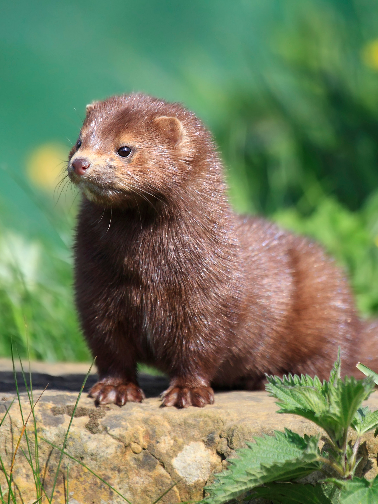
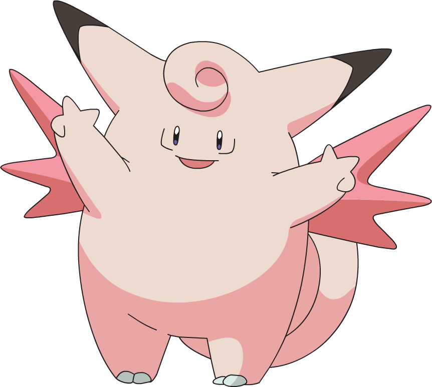
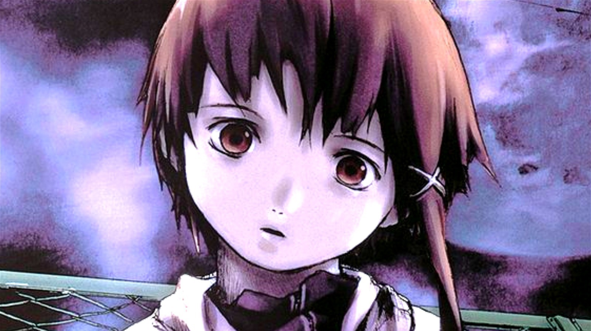
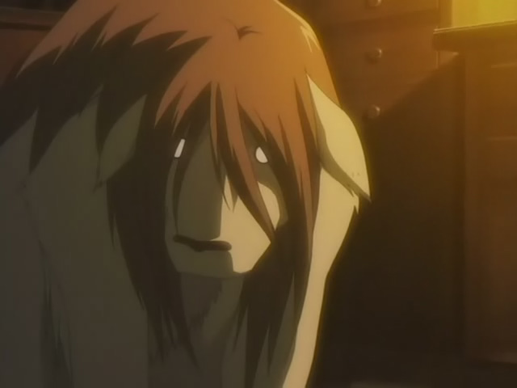

All About Lia
Go back to the Digital Design page
Before BECA
I used to go PS.53x and had a lot of and made some friends before middle school. I had a lot a fun memories there. In elementary school I really liked reading and would read at school and afterschool. I also liked drawing and playing games on my 3ds.
During BECA
I been at BECA since middle school. I've had a lot of different teachers and met so many interesting people and made many friends. My interests have also slowly changed overtime even if the difference was small. I would read less but I would draw more. I still play video games and now I like listening to music. I like finding new artists and makinng playlists. I also slack off more than I used to. Here is a list of animals/people/things that my friends have said that I looked like:

 







You can look at a playlist my friends and I made here
After BECA
After I graduate I plan on going to college and studying something related to animals like marine biology or entomology but I'm not sure if that's what I'll stick with.